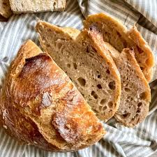

Back
Easy Overnight Bread

Simple No-Knead, Overnight Bread
Delicious homemade bread can be made with just 3 Ingredients and very
little prep time. This fresh bread will elevate your mornings and will
leave your home smelling like a bakery!
Ingredients
- 1 large mixing bowl
- 3 cups flour
- 1/4 tablespoon instant-yeast
- 1 1/2 cups water
- 2 teaspoons kosher salt
Steps
- Combine Flour, instant-yeast, and salt. Add water and stir until dough
forms into a shaggy ball and does not stick to the sides of the bowl.
- Cover the bowl with a plastic wrap and place the bowl in the oven while it is off.
Let the dough rise for 12 to 18 hours
- Remove the dough from the bowl after it has risen onto a floured surface. Shape
the dough into a ball, cover and let rest for 10 minutes. While the dough is resting,
preheat the oven to 350F.
- Place the dough in a dutch oven and cover. Bake for 30 minutes and remove the lid and bake
for an additional 10-20 minutes.